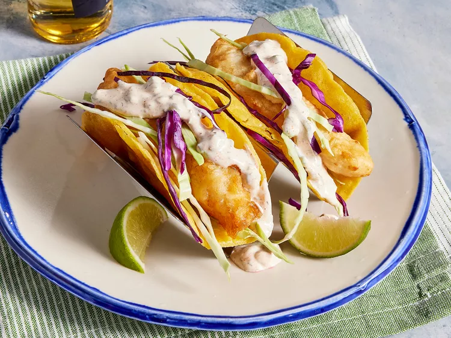

Yummy Fish Tacos

Description
Picture this: crispy, golden-brown fish fillets nestled in warm, soft tortillas, topped with a vibrant medley of fresh vegetables and a zesty lime crema.
These fish tacos are a delightful fusion of flavors and textures that will transport you straight to a seaside taqueria.
Perfect for a casual weeknight dinner or a weekend gathering with friends, this recipe is both simple to prepare and utterly satisfying.
Whether you're a seafood aficionado or just looking to switch up your taco game, these fish tacos promise to be a hit at your table.
Enjoy the balance of savory, crunchy, and tangy in every bite!
Ingredients (Serves 5)
- Fish: About 1.5 pounds of white fish fillets (cod or tilapia).
- Tortillas: 10-15 small tortillas (2-3 per person).
- Cabbage: About 2-3 cups of shredded cabbage.
- Lime: 2-3 limes for juice.
- Cilantro: 1/2 cup of chopped cilantro.
- Sour Cream or Crema: 1 cup.
- Salsa: 2 cups (or more to taste).
- Avocado: Optional, 2 avocados sliced.
Preparation
- Rinse the fish fillets and pat them dry with paper towels.
- Cut the fillets into bite-sized pieces.
- Season the fish with salt, pepper, and a squeeze of lime juice.
- Heat a tablespoon of oil in a skillet over medium-high heat.
- Add the seasoned fish pieces to the skillet.
- Cook for 3-4 minutes on each side until golden brown and fully cooked through.
- Remove the fish from the skillet and set it aside.
- Warm the tortillas in a dry skillet over medium heat for about 30 seconds on each side until pliable.
- Alternatively, you can wrap the tortillas in a damp paper towel and microwave them for about 30 seconds.
- Shred the cabbage and chop the cilantro.
- Slice the avocados.
- Prepare the salsa and any other desired toppings.
- Place a few pieces of cooked fish onto each tortilla.
- Add a handful of shredded cabbage and a few slices of avocado.
- Top with a spoonful of salsa and a drizzle of sour cream or crema.
- Garnish with chopped cilantro and a squeeze of lime juice.
Your fish tacos are ready to be devoured. Happy cooking!